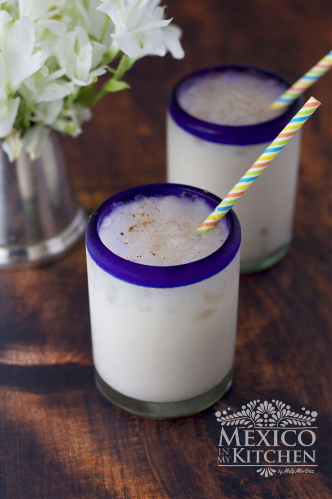

Mexican Horchata

Description
Did somebody say Horchata?
You might want to get rid of the powdered stuff in your panty. This Mexican drink is so much better when made fresh. It's a fun drink for your family, for parties, or even just for yourself. Here's how to make it.
Ingredients
- 2 cups long grain rice
- 1 stick Mexican Cinnamon
- 4 cups hot water
- 8 cups extra water
- ¾ cup sugar
- 2 tsp vanilla extract
- 1 cup milk (2% or whole)
- Ice cubes to serve
Steps
- Place the rice and cinnamon stick in a large glass bowl and add the 4 cups of hot water. Cover the bowl with a dish or plastic wrap, then let it soak overnight, or at least 8 hours.
- The next day, pour the rice, cinnamon, and water into your blender and process until it becomes a smooth, watery paste.
- Using a strainer or sieve, strain the mixture into a wide mouth pitcher, stirring to help the liquid pass through.
- Add the milk (if using), vanilla extract, and the rest of the water. Stir in the sugar, adjusting the amount to fit your taste. Let the drink chill in the refrigerator. Stir the Horchata before serving, since the rice mix tends to settle at the bottom. Serve in glasses with ice cubes.
Credit
This recipe is copied from Mexico In My Kitchen